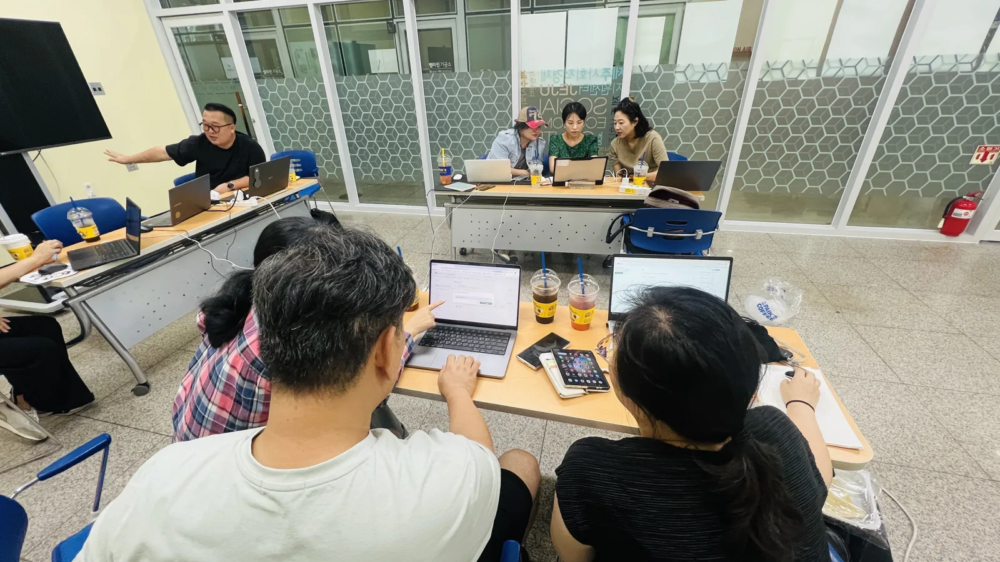
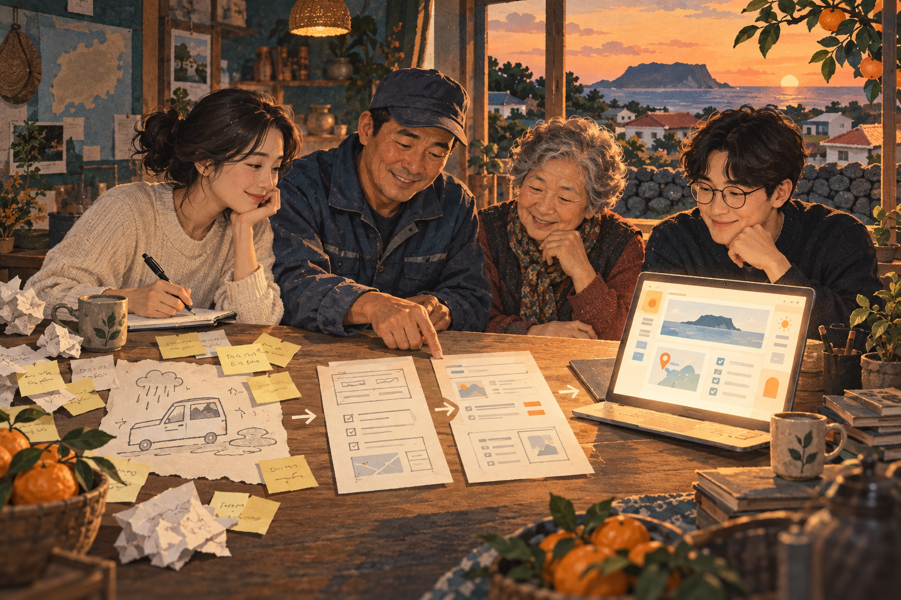
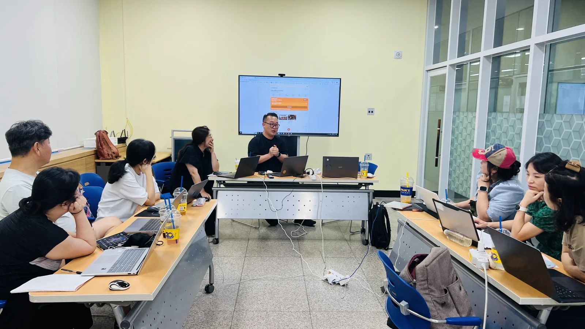
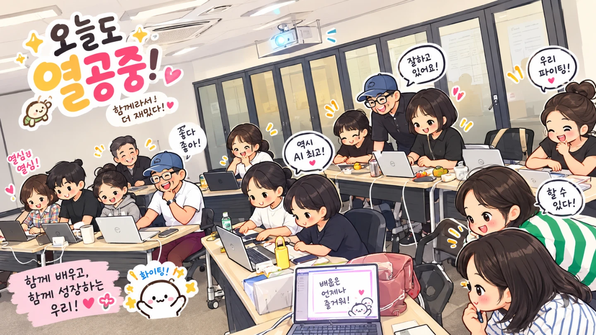

각자의 생활에서
문제를 가져온 제주 이웃들
JEJU × AI × PEOPLE
같이 배우고,
가치를 만듭니다.
제주 이웃 11명, 4주간의 도전.
내 삶의 문제를 직접 풀어보는 AI 실험.
동네에서 함께 배우던 사람들이 팀을 이루었습니다.
막연했던 아이디어가, 직접 시연하는 결과물이 되기까지.
AI를 잘 몰라도 괜찮습니다. 우리도 처음이었으니까요.
우리의 실험은, 여기서 시작됩니다

배우는 사람에서
만드는 사람으로.
만드는 사람으로.
당근에서 시작한 배움바이브코딩 1기 · 새로운 실험의 시작
OUR FIRST EXPERIMENT / 바이브코딩 1기
내 주변의 작은 문제를,
내 손으로 만드는 해결책으로.
AI를 함께 배우던 모임에서 한 걸음 더.
제주 이웃들이 자기 삶의 문제를 찾아
작지만 구체적인 디지털 도구로 만들었습니다.
일상을 바꾸는 마이크로 솔루션가까운 한 사람의 불편을 해결하는, 작고 실용적인 도구.
문제 발견부터
직접 만든 결과물의 시연까지
함께 묻고, 만들고,
막히는 곳을 다시 풀어낸 실험
제주 사회적경제지원센터 ‘띵크살롱’을 통해 진행한 바이브코딩 1기
FROM A QUESTION TO A WORKING SOLUTION
출발점은,
내가 겪고 있는 문제였습니다.
문제를 꺼내고, 함께 정리하고, AI에게 설명하고, 직접 확인하기.
4주 동안 생각을 작동하는 결과물로 바꿔 간 과정입니다.

- 011주차의 시작 · 문제 발견
각자의 일상에서 불편을 꺼냅니다.
퍼실리테이션으로 참여자의 경험과 질문을 이끌어냅니다. 누구의 어떤 순간이 불편한지, 함께 듣고 해결할 문제를 찾습니다.
경험과 대화 → 해결할 문제 - 02문제 구조화 · 정의
막연한 아이디어를 분명한 질문으로.
사용자와 상황, 불편의 원인을 나누어 봅니다. 무엇을 해결할지, 어디까지 만들지 팀이 같은 그림을 그립니다.
문제 → 사용자 · 상황 · 해결 범위 - 03AI가 이해할 언어로 번역
만들고 싶은 것을 MD 문서에 담습니다.
문제와 필요한 기능, 이용 흐름을 구조화한 글로 정리합니다. 이 Markdown(MD) 파일이 팀과 AI가 함께 읽는 개발 안내서가 됩니다.
팀의 생각 → AI에게 건넬 개발 안내서 - 04AI와 개발 · 직접 검증
만들게 하고, 써 보고, 다시 고칩니다.
문서를 바탕으로 AI와 개발을 진행합니다. 화면과 기능을 직접 사용하며 의도대로 작동하는지 확인하고, 부족한 부분을 고칩니다.
개발 안내서 → 작동하는 결과물 - 05시연 · 발표
우리의 문제와 해결책을 직접 보여줍니다.
왜 만들었는지, 어떻게 쓰는지 팀이 설명하고 시연합니다. 머릿속에 있던 생각이 다른 사람 앞에서 움직이는 순간을 함께 나눕니다.
결과물 → 설명하고 보여줄 수 있는 성취

결과물이 눈앞에서 움직이던 순간
막막했던 AI가,
내 삶을 바꿀 수 있다는
성취감으로.
처음에는 어디서 시작해야 할지 막막했습니다. 함께 문제를 정리하고, 만들고, 고친 끝에 우리가 생각한 것이 화면에서 움직였습니다.
결과물을 시연하던 순간, 뭉클함이 밀려왔습니다. 내 삶의 불편을 직접 바꿔볼 수 있다는 자신감. 그 경험이 이 실험에 남았습니다.
1기 진행 경험을 바탕으로 정리한 운영진의 기록WHY THIS EXPERIMENT MATTERS
작은 해결책을 만든 경험이,
다음 도전을 시작할 힘이 됩니다.
일상의 경험이 출발점
전문 지식보다 자기 삶에서 발견한 문제를 먼저 꺼냅니다. 누구나 질문을 가져오고 함께 도전할 수 있는 장을 만듭니다.
직접 만들고 설명하는 사람
도구를 배운 뒤 문제 정의, 개발, 검증, 발표까지 경험합니다. AI를 내 삶에 적용해 보는 실행의 기회를 만듭니다.
가까운 문제에서 다음 현장으로
이웃의 질문을 실제 도구로 옮겨 보는 과정을 쌓습니다. 이 경험을 다음 기수와 마을의 현장으로 이어가려 합니다.
이런 첫 성취를, 더 많은 이웃에게.
교육 운영과 실험 공간, 현장 연결을 함께할 기관·파트너를 찾습니다.
MADE WITH AI / 커뮤니티의 결과물
“이런 게 있으면 좋겠다”를
직접 만들어 봤습니다.
마을의 소식부터 가족의 일상까지.
각 서비스에서 결과물을 만나보세요.
커뮤니티 활동과 관련된 프로젝트입니다. 각 서비스는 개별적으로 운영되며, 제공 기능은 변경될 수 있습니다.
OUR COMMUNITY / 함께한 사람들
AI는 도구일 뿐,
변화를 만드는 건 사람입니다.
트럭기사부터 전업주부, 공학박사까지.
직업은 달라도,
함께 만들어 보고 싶은 마음은 같습니다.
가치onAI는 제주에서 AI를 함께 배우고, 일상과 마을의 문제를 직접 해결해 보는 팀입니다. 작은 호기심으로 만나 질문하고, 만들고, 고치며 다음 시도를 이어갑니다.
우리가 지키는 네 가지
- 문제는 자기 주변에서 찾습니다.
- 해결책보다 문제를 먼저 확인합니다.
- AI가 만든 결과를 직접 검증합니다.
- 팀원 모두가 결과물을 설명합니다.
PEOPLE WE HAVE MET
우리 모임을 거쳐 간, 다양한 삶의 전문가들.
운전대를 잡는 사람, 가정을 돌보는 사람, 연구하고 설계하는 사람.
각자의 현장에서 가져온 경험이 새로운 질문과 아이디어가 됩니다.
- 트럭기사
- 전업주부
- 공학박사
- 건축사 대표
- 대리운전기사
- 일반 사무직
- 개발자
- 부동산 대표
- 웨딩업체 사장님
그리고 더 많은 이웃들이 각자의 경험으로 함께해 왔습니다.
OUR JOURNEY / 걸어온 길
한 사람의 호기심이,
우리의 실험이 되기까지.
카페의 작은 테이블에서 마을의 현장까지.
우리는 만나서, 함께 해 왔습니다.
같은 테이블, 서로 다른 생각.바이브코딩 모임
EVERYDAY LEARNING
처음 만든 PPT부터,
나만의 게임까지.
당근 모임에서 이어지는 작은 실습들.
각자의 관심과 속도로, 한 가지씩 만들어 봅니다.

배우는 방식도 함께 만들어 갑니다
모르면 알려 주고,
다음에 또 만나는 사이.
세 시간 동안 스스로 작업하다가, 막히면 서로 묻습니다. 공부가 끝나면 맛집 이야기도 나눕니다. 모임을 거듭하며 낯선 도구만큼 낯선 사람도 조금씩 가까워집니다.
참여자가 남긴 하루 읽기 ↗VOICES FROM OUR COMMUNITY
함께한 사람들이 남긴 말.
당근 모임의 공개 후기에서 발췌했습니다.
기술을 넘어, 사람에게 남는 것
누군가 만들어주면 좋겠다.
우리가 한번 만들어볼까?
질문이 달라지면, 일상도 조금씩 달라집니다.
04 / WHAT'S NEXT
다음 실험의 주인공은,
당신일지도 모릅니다.
- 누구와
- AI를 잘 몰라도, 함께 만들어 보고 싶은 누구나
- 언제
- 매주 토요일 오후 · 총 4주 · 회당 약 4시간
- 시작
- 추석 이후~10월 예정 모집 글에 댓글로 참여 의사를 남겨 주세요. 세부 일정·장소·참가비는 운영진에게 확인해 주세요.
1주문제 발견2주아이디어 기획3주AI와 제작4주공유와 시연
05 / LET'S MAKE IT TOGETHER
당신의 동네에는
어떤 문제가 있나요?
작은 질문 하나면 충분합니다.
배움도, 협력도, 새로운 실험도 함께 시작해요.
01 / 참여
같이 배우고 싶어요
당근에서 모임 소식과 후기를 보고
다음 만남에 함께해요
우리 마을에서도 해볼까요
마을·기관의 교육과
현장 문제 해결이 필요한 분
함께 가능성을 넓혀요
시민 AI 실험의 지원·협력,
출판과 취재로 함께할 분
편하게 이야기 건네주세요.naggu1999@gmail.com